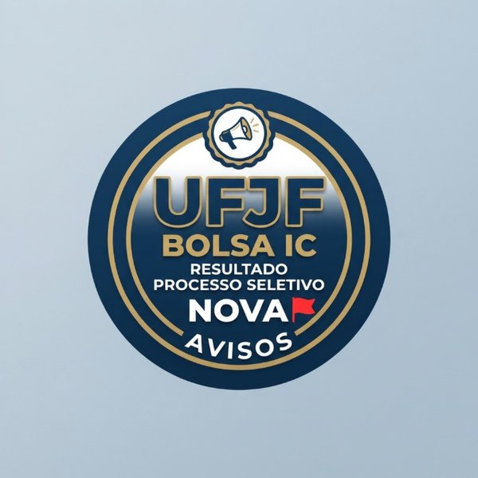
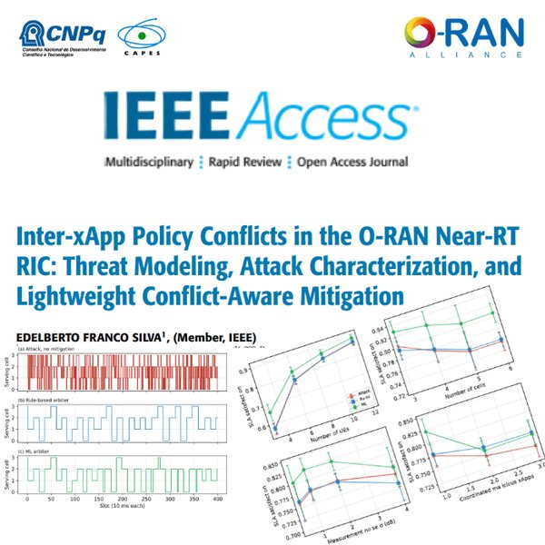
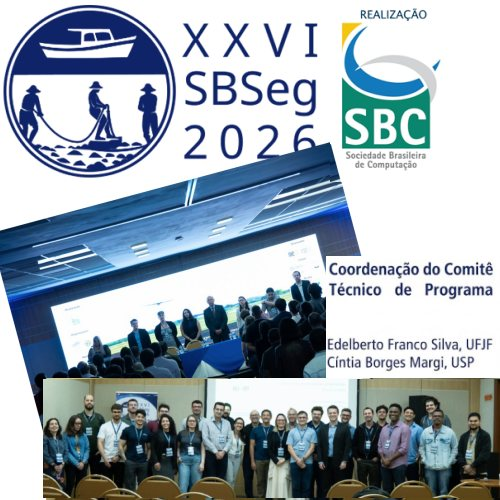
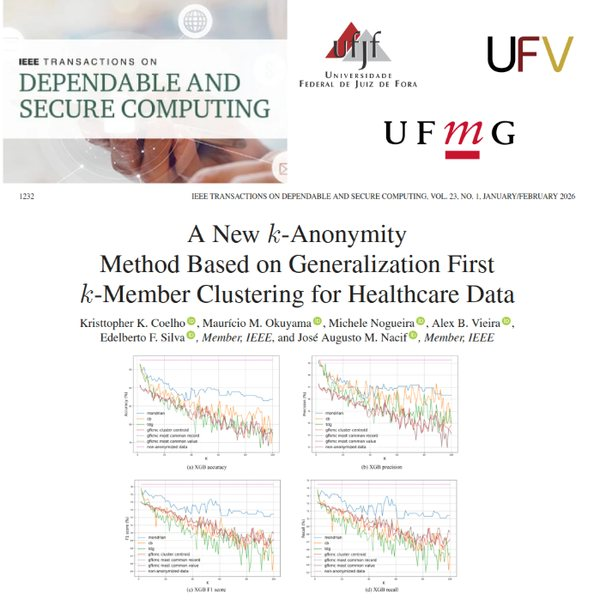
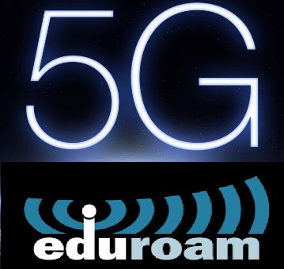

Sobre
Sou Professor Associado do Departamento de Ciência da Computação (DCC) da Universidade Federal de Juiz de Fora (UFJF) e docente permanente do Programa de Pós-Graduação em Ciência da Computação (PPGCC), do qual sou vice-coordenador. Sou Bolsista de Produtividade em Pesquisa do CNPq (PQ-2) e Technical Editor da IEEE Network. Obtive os títulos de mestre (2011) e doutor (2016) em Computação pela Universidade Federal Fluminense (UFF).
Coordeno pesquisas no NetLab/UFJF, com ênfase em redes de computadores e cibersegurança. Meus trabalhos tiveram financiamento de RNP, FINEP, FAPERJ, FAPEMIG, FAPESP, CNPq, PTI e TBE. Sou membro da IEEE e da SBC, e membro eleito do comitê gestor da Comissão Especial em Segurança da Informação e de Sistemas Computacionais (CESeg) da SBC.
Linhas de pesquisa

Redes de Computadores
Redes 5G/6G e o Core 5G, O-RAN (xApps e rApps), sensoriamento e localização por Wi-Fi, IoT e LoRa, com aprendizado de máquina aplicado à gerência de redes.

Cibersegurança
Zero Trust e autenticação contínua, detecção de intrusão, gestão de identidade e acesso (eduroam, identidade federada, identidades não humanas) e aprendizado de máquina com preservação de privacidade.
Temas detalhados e oportunidades de orientação → · Projetos e colaborações →
Notícias

2026Resultado do processo de seleção para bolsistas de iniciação científica BIC e PIBIC/UFJF (2026/2027) disponível aqui.- 2026Duas dissertações de mestrado defendidas no PPGCC/UFJF: Michael Zancanella (detecção de ataques Mirai em redes IoT 5G) e Rodrigo Mendes Peixoto (gêmeo digital para gestão de energia em salas de aula inteligentes).

2026Artigo sobre conflitos de políticas entre xApps no Near-RT RIC do O-RAN, ligado ao projeto PQ do CNPq, publicado na IEEE Access (doi).
2026Coordenador geral do Comitê de Programa do SBSeg 2026, com Cíntia Borges Margi (USP).- 2026Quatro artigos no IEEE ISCC 2026 sobre handover em Open RAN, arquiteturas do Core 5G e autenticação biométrica multimodal.

2025Artigo sobre k-anonimato para dados de saúde aceito na IEEE Transactions on Dependable and Secure Computing (doi), com UFV e UFMG.
2023–Pesquisador com a RNP na integração entre redes 5G e o eduroam.
Publicações selecionadas
- Inter-xApp Policy Conflicts in the O-RAN Near-RT RIC: Threat Modeling, Attack Characterization, and Lightweight Conflict-Aware Mitigation
- A New k-anonymity Method Based on Generalization First k-member Clustering for Healthcare Data
- Intelligent resource allocation in wireless networks: Predictive models for efficient access point management
- Identity management for Internet of Things: Concepts, challenges and opportunities
- Smart Line-of-Sight Identification in LoRaWAN NetworksBest Paper SIoT 2024
Interessados em orientação
Oriento alunos de graduação (TCC e iniciação científica) e de mestrado em redes de computadores e cibersegurança. Veja a lista de temas sugeridos e entre em contato.